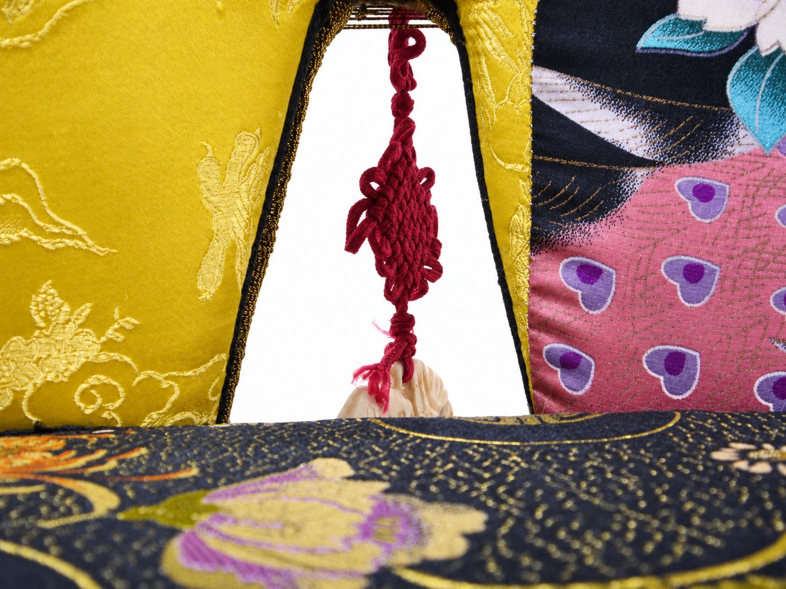
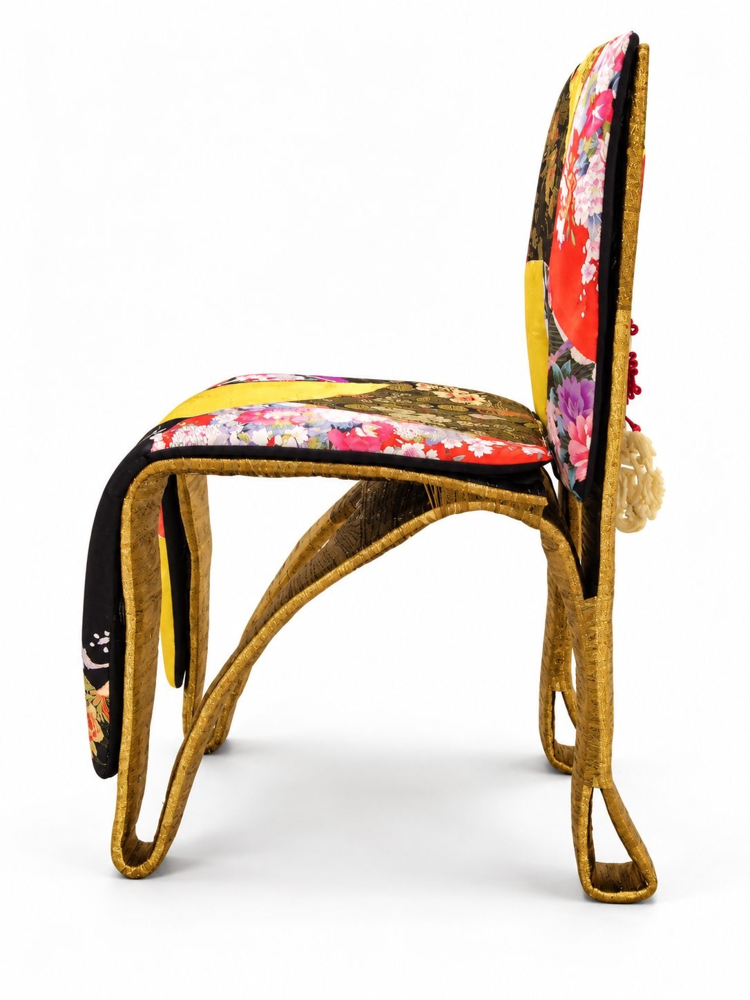
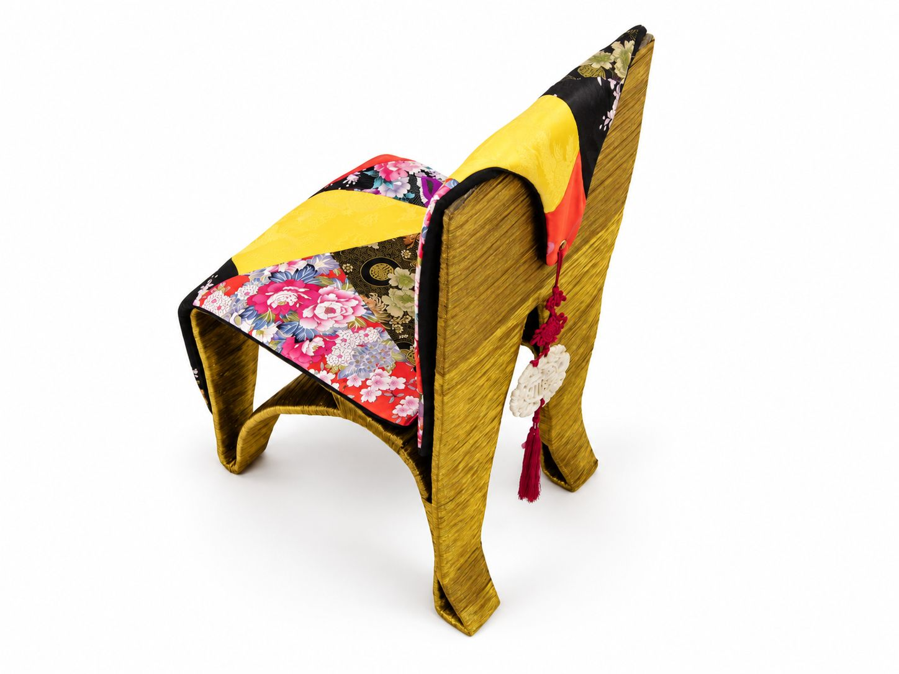
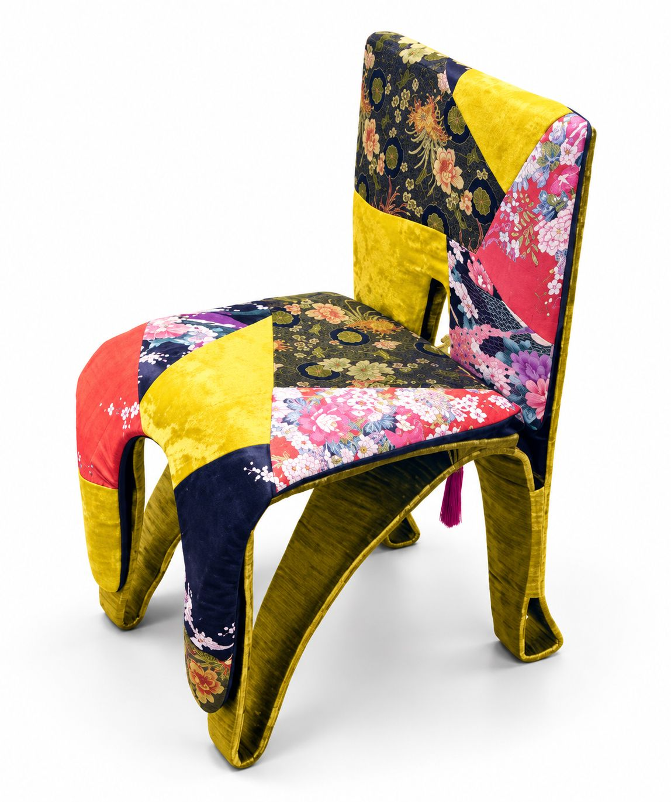

WORK 28 / 29
Ugly Me
An exploration of inequality, appearances and worth.
Year2007
MaterialsFelt, silk and thread
StagePrototype
DESIGN STORY
Ugly Me considers inequality through the language of furniture. Its irregular, richly varied textile surfaces bring together different appearances and material values, challenging assumptions about beauty, status and worth. The chair uses contrast and imperfection to invite reflection on how society judges what—and whom—it sees.
SELECTED PRESENTATIONS
- 2007SaloneSatellite · Rho, Milan



